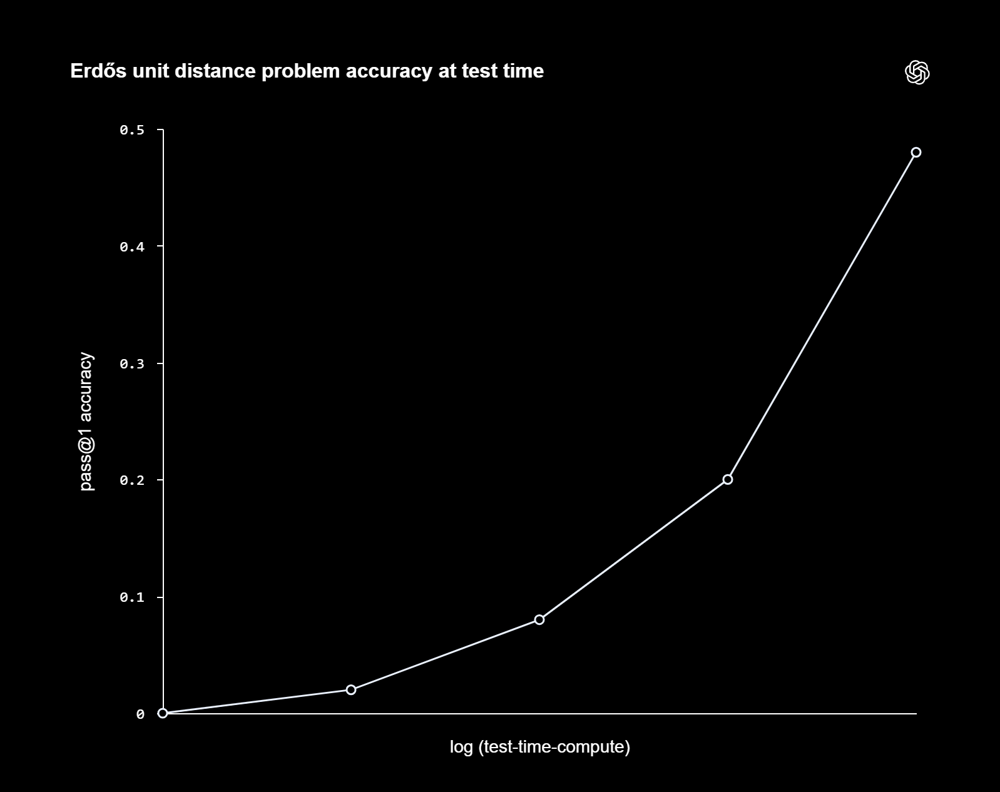
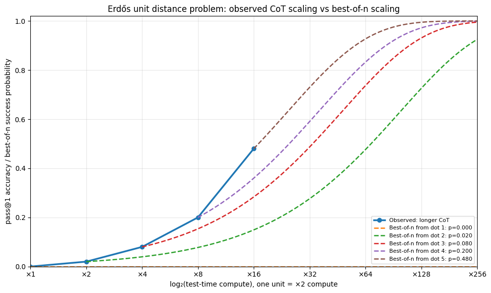

Modern LLMs like GPT-5.5-Thinking, Gemini 3.1 Pro have an adjustable thinking effort (how many tokens they generate linearly one-by-one in chain-of-thought before giving an answer). Higher thinking effort consistently shows scalably better performance in almost all tasks. A 10 minute reasoning at the typical speed of 50 tokens per second generates 30 000 thinking tokens. This is below the modern LLM context window of 400 000 tokens. This gives us one scaling axis.
What about GPT-5.5-Pro, Gemini DeepThink? Their structure is not public but the evidence points towards it being a simple parallel think-combine pipeline of \(\approx 5-100\) copies of the normal thinking models. This is parallel scaling axis of test-time compute
One can introduce more compute scaling by prompting other copies of LLMs to judge and refine results. This gives us pipeline in a style of Aletheia1 of Google DeepMind and Rethlas2 of PekingU/BICMR.
Final parallel scaling axis is directly indicating in the prompt the direction that the proof should try: "solve using algebraic number theory / probability theory / arithmetic sieves". This is not so widespread but already tried in the literature.
In total we have 4 scaling axis:
- Longer reasoning
- Parallel copies scaling
- Generator-verifier iterations scaling
- scaling by research direction prompting
Assume a 60 000 tokens reasoning, scaled 10x in parallel, with 10 generator-verifier iterations, and 10 directions. The total API costs with GPT-5.5-Thinking become \($1.80 \times 10 \times 20 \times 10 = $360\), whoops. OpenAI researchers, especially Noam Brown and Sebastien Bubeck, repeatedly emphasize that such inference-time compute scaling will get more important.
As an exercise let's calculate the raw token cost of the Unit Distance Conjecture solution. OpenAI reports a 120 pages of summarized Chain-of-Thought3. Let's assume a summarization factor of 20, so the full Chain-of-Thought would be 2400 pages. This is at most 1-2M tokens. The most expensive raw model inference cost i know of is $50 per 1M tokens, which gives an upper bound of $100 total. If you use GPT-5.5-Pro API cost $270/1M tokens, you get $540 total cost.
Here is a curve from OpenAI showing how success rate changes from doubling number of reasoning tokens:

We can compare it to the naive best of n scaling and observe that reasoning compute is scaling better than parallel sampling.
